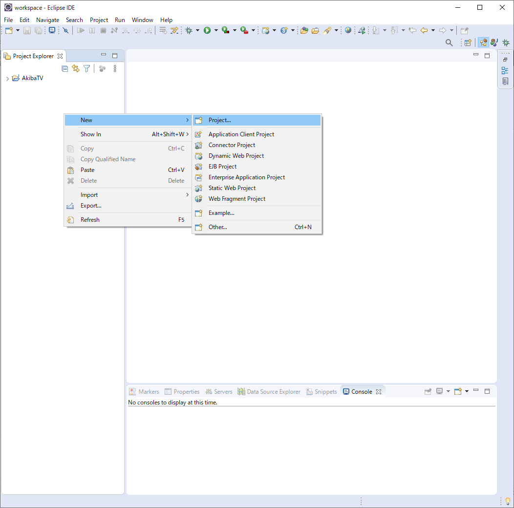

JAVA에서 JSOUP을 이용한 사이트 크롤링 처리
JAVA에서 JSOUP을 이용한 사이트 크롤링 처리
안녕하세요. AkibaTV입니다.
이번에 소개할 내용은 JAVA에서 JSOUP을 이용한 사이트 크롤링을 해보도록 하겠습니다.
크롤링이란 사이트에서 원하는 부부분을 추출해서 여러 형태로 데이터를 가공하는 방식 입니다.
우선 어떻게 사용하는지 해보도록 하겠습니다.
이클립스를 실행을 하시고 프로젝트를 하나 만들도록 하겠습니다.
이클립스가 아직 설치가 되지 않으셨으면
JAVA 프로그램 개발을 위한 이클립스 환경 구축을 참고해 주시기 바랍니다.
이클립스를 실행 하신후 프로젝트를 추가를 하도록 하겠습니다.
아직 JDK를 설치하지 않으셨으면 라즈베리파이 또는 리눅스에서 OpenJDK 설치하기를 해주시기 바랍니다.

신규로 프로젝트를 선택해 주세요.
자바 프로젝트를 선택하시기 바랍니다.
프로젝트명을 crawling로 하시고 Finish를 선택해 주세요.
프로젝트가 생성되셨으면 JSOUP을 사용하기 위한 라이브러리를 추가를 하셔야만 합니다.
아래의 사이트에서 JSOUP 라이브러리를 다운로드 해주시기 바랍니다.

jsoup-1.13.1.jar core library를 선택하시어 다운로드 해주시기 바랍니다.
다운로드하신 라이브러리를 이클립스의 프로젝트에 추가를 해주시기 바랍니다.
이클립스에 추가한 라이브러리를 빌드패스에 등록을 해주시기 바랍니다.
위와같이 JSOUP를 빌드패스에 등록하시면 본격적으로 JAVA에서 JSOUP을 사용하실수 있게 됩니다.
그럼 클래스 파일을 하나 추가를 하도록 하겠습니다.
클래스명은 test를 적어주시고 public static void main(String[] args)에 체크를 해주시기 바랍니다.
그럼 네이버의 검색창의 이미지를 가져오는것을 해보도록 하겠습니다.

아래와 같이 코딩을 해주시기 바랍니다.
1 | package crawling; |
코딩을 하셨으면 실행을 해서 확인을 해보도록 하겠습니다.
자바 어플리케이션으로 실행을 해주시기 바랍니다.
실행을 하면 콘솔창에 지정한 태그의 이미지 주소가 추출 된것을 확인 하실수 있습니다.